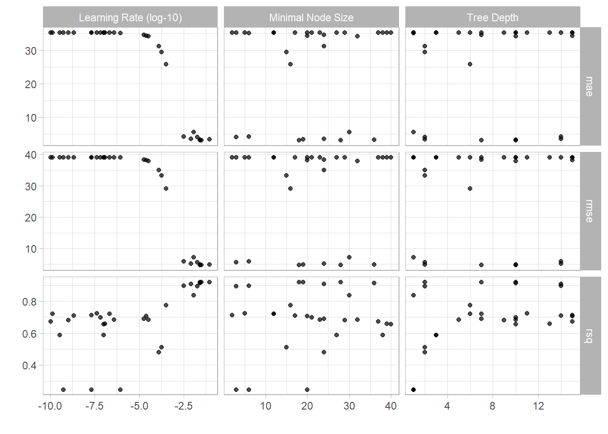
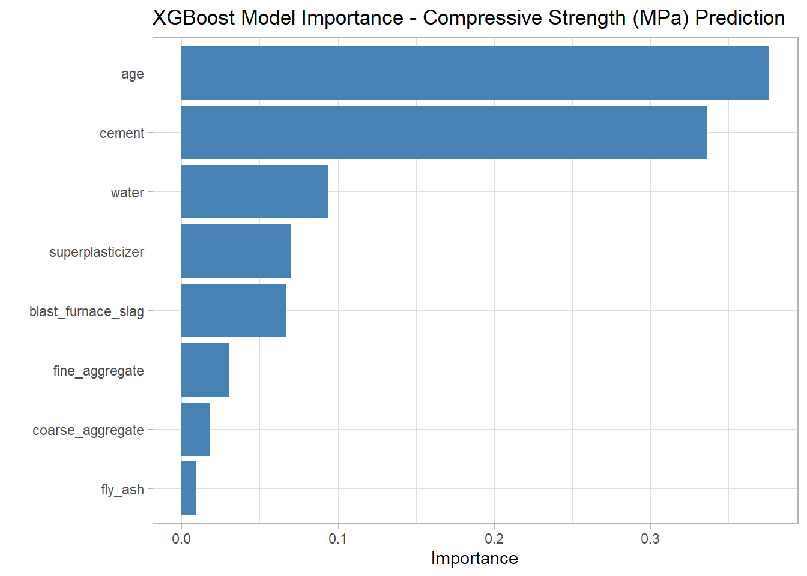

Extreme Gradient Boosting Modeling of the Concrete Compressive Strength Dataset
Posted on December 3, 2020
In this post, we will begin to use machine learning techniques for predicting compressive strength of formulations using the concrete dataset. In a previous post, we created a model using a conventional material modeling approach which resulted in an R2 of 0.78. Here we will use an XGBoost model to predict compressive strength and compare the results with the conventional material model.
Stage 1: Model Tuning
Initial splitting of the dataset into Training and Test Dataset Here we use the rsample package to create an 80/20 split. The concrete dataset contains 1030 formulations of which 825 are randomly assigned to training and 205 are randomly assigned to testing.
set.seed(123)
concrete_split <- initial_split(concrete_tbl, prop = 0.80)
concrete_train <- training(concrete_split)
concrete_test <- testing(concrete_split)Preprocessing is accomplished by using the recipe package. The recipe provides the steps required to transform our raw data into a dataset suitable for machine learning. The Concrete dataset actually doesn’t require much reformatting. The major issue was the lengthy column names which was addressed immediately after the dataset was imported. The dataset contained all numerical values and no missing data. Initially we will just center and scale the predictors before sending to the nnet model.
concrete_rec <- recipe(compressive_strength ~ ., data = concrete_train) %>%
step_center(all_predictors()) %>%
step_scale(all_predictors())
concrete_rec## Data Recipe
##
## Inputs:
##
## role #variables
## outcome 1
## predictor 8
##
## Operations:
##
## Centering for all_predictors()
## Scaling for all_predictors()Cross validation folds are created in order to assess the performance of the model parameters. Here we use 5-fold cross validation to create splits from our training dataset and also using the preprocessing pipeline specified above.
set.seed(234)
concrete_folds <- vfold_cv(concrete_train, v = 5)
concrete_folds## # 5-fold cross-validation
## # A tibble: 5 x 2
## splits id
## <list> <chr>
## 1 <split [660/165]> Fold1
## 2 <split [660/165]> Fold2
## 3 <split [660/165]> Fold3
## 4 <split [660/165]> Fold4
## 5 <split [660/165]> Fold5Model specifications are created using the parsnip package. Here we specify a boosted tree model using the XGBoost engine. Notice that the min n, tree depth and learn rate parameters have been specified to be tuned.
xgboost_spec = boost_tree(
mode = "regression",
trees = 1000,
min_n = tune(),
tree_depth = tune(),
learn_rate = tune()
) %>%
set_engine("xgboost", objective = "reg:squarederror") %>%
set_mode("regression")
xgboost_spec## Boosted Tree Model Specification (regression)
##
## Main Arguments:
## trees = 1000
## min_n = tune()
## tree_depth = tune()
## learn_rate = tune()
##
## Engine-Specific Arguments:
## objective = reg:squarederror
##
## Computational engine: xgboostset.seed(345)
xgboost_grid <- grid_max_entropy(min_n(), tree_depth(), learn_rate(), size = 30)
# xgboost_grid %>%
# ggplot(aes(penalty, hidden_units)) +
# geom_point(color = "steelblue", size = 3) +
# scale_x_log10() +
# theme_light() +
# labs(title = "Max Entropy Grid", x = "Penalty (log scale)", y = "Hidden Units")
xgboost_grid## # A tibble: 30 x 3
## min_n tree_depth learn_rate
## <int> <int> <dbl>
## 1 6 1 8.78e- 7
## 2 38 3 9.89e- 8
## 3 30 1 1.18e- 2
## 4 23 5 3.77e- 7
## 5 37 15 1.07e-10
## 6 16 6 3.19e- 4
## 7 12 7 1.34e-10
## 8 40 10 9.93e- 8
## 9 2 15 2.08e- 8
## 10 36 10 2.64e- 2
## # ... with 20 more rowsDefine a workflow for the tuning process
concrete_wf <- workflow() %>%
add_recipe(concrete_rec) %>%
add_model(xgboost_spec)Hyperparameter tuning is now performed using the tune_grid() function from the tune package. Here we specific the formula, model, resamples, grid and metrics. The metrics come from the yardstick package. For regression problems, we can specify multiple metrics such as mae, mape, rmse and rsq into a metric_set().
doParallel::registerDoParallel()
set.seed(456)
begin <- Sys.time()
xgboost_res <- tune_grid(
concrete_wf,
resamples = concrete_folds,
grid = xgboost_grid,
metrics = metric_set(rmse, rsq, mae),
control = control_grid(save_pred = TRUE)
)
end1 <- Sys.time() - beginStage 2: Compare and Select the Best Model
Identify the best hyperparameter values using the show_best() function.
xgboost_res %>% show_best("mae", n = 5)## # A tibble: 5 x 9
## min_n tree_depth learn_rate .metric .estimator mean n std_err .config
## <int> <int> <dbl> <chr> <chr> <dbl> <int> <dbl> <chr>
## 1 18 10 0.0265 mae standard 3.19 5 0.155 Model14
## 2 28 7 0.0302 mae standard 3.23 5 0.144 Model30
## 3 36 10 0.0264 mae standard 3.36 5 0.126 Model10
## 4 19 2 0.0904 mae standard 3.38 5 0.131 Model20
## 5 24 14 0.00824 mae standard 3.56 5 0.112 Model25Visualize the tuning results
autoplot(xgboost_res)
Select the best parameters based on the lowest mean absolute error.
params_xgboost_best <- xgboost_res %>% select_best("mae")
params_xgboost_best## # A tibble: 1 x 4
## min_n tree_depth learn_rate .config
## <int> <int> <dbl> <chr>
## 1 18 10 0.0265 Model14Finalize workflow with the best model parameters
final_xgboost <- finalize_workflow(concrete_wf, params_xgboost_best)
final_xgboost## == Workflow ==============================================================
## Preprocessor: Recipe
## Model: boost_tree()
##
## -- Preprocessor ----------------------------------------------------------
## 2 Recipe Steps
##
## * step_center()
## * step_scale()
##
## -- Model -----------------------------------------------------------------
## Boosted Tree Model Specification (regression)
##
## Main Arguments:
## trees = 1000
## min_n = 18
## tree_depth = 10
## learn_rate = 0.0264752492619167
##
## Engine-Specific Arguments:
## objective = reg:squarederror
##
## Computational engine: xgboostWhich Features are most important?
final_xgboost %>%
fit(data = concrete_train) %>%
pull_workflow_fit() %>%
vip(aesthetics = list(fill = "steelblue")) +
labs(title = "XGBoost Model Importance - Compressive Strength (MPa) Prediction")## Warning: `as.tibble()` is deprecated as of tibble 2.0.0.
## Please use `as_tibble()` instead.
## The signature and semantics have changed, see `?as_tibble`.
## This warning is displayed once every 8 hours.
## Call `lifecycle::last_warnings()` to see where this warning was generated.
Stage 3: Train Final Model
Fit model on train and evaluate on test.
final_res <- last_fit(final_xgboost, concrete_split, metrics = metric_set(rmse, rsq, mae))Assess final model performance metrics.
collect_metrics(final_res)## # A tibble: 3 x 3
## .metric .estimator .estimate
## <chr> <chr> <dbl>
## 1 rmse standard 3.67
## 2 rsq standard 0.951
## 3 mae standard 2.57Visualize actual vs. predicted compressive strength for final model.
collect_predictions(final_res) %>%
ggplot(aes(compressive_strength, .pred)) +
geom_abline(slope = 1, lty = 2, color = "gray50", alpha = 0.5) +
geom_point(alpha = 0.6, color = "midnightblue") +
ylim(0, NA) +
labs(title = "XGBoost Model Performance for Concrete Dataset",
x = "Actual Compressive Strength (MPa)",
y = "Predicted Compressive Strength (MPa)")
A work by datadavidz